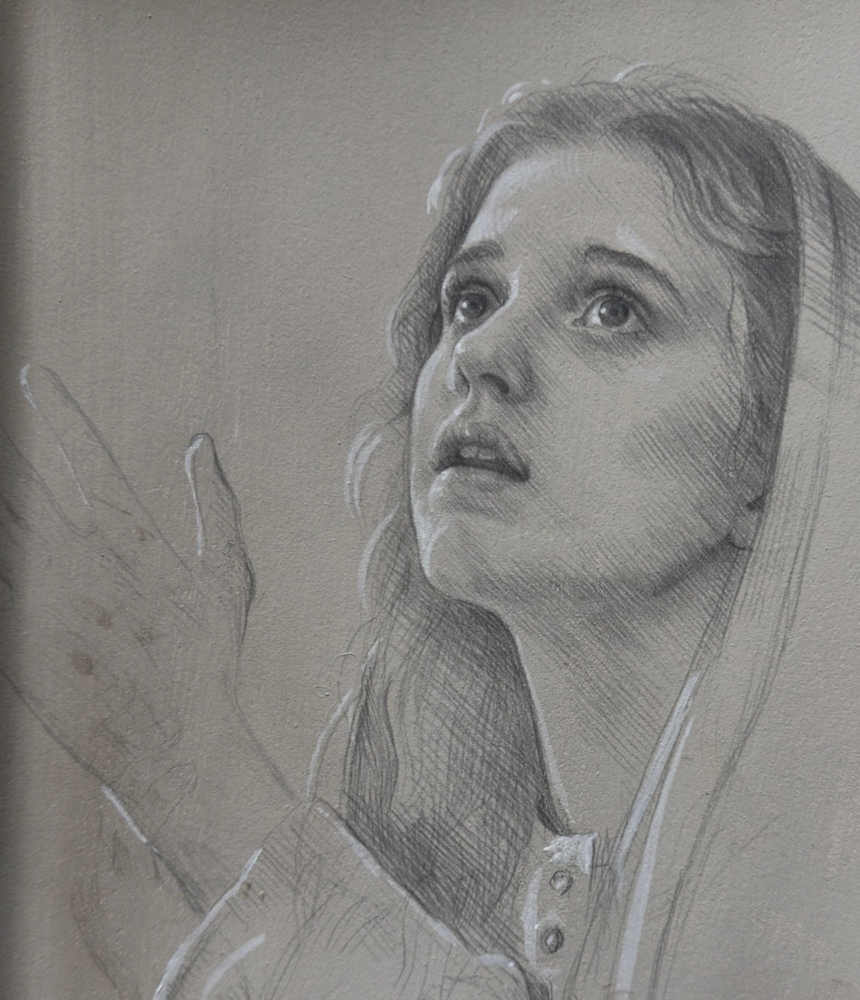
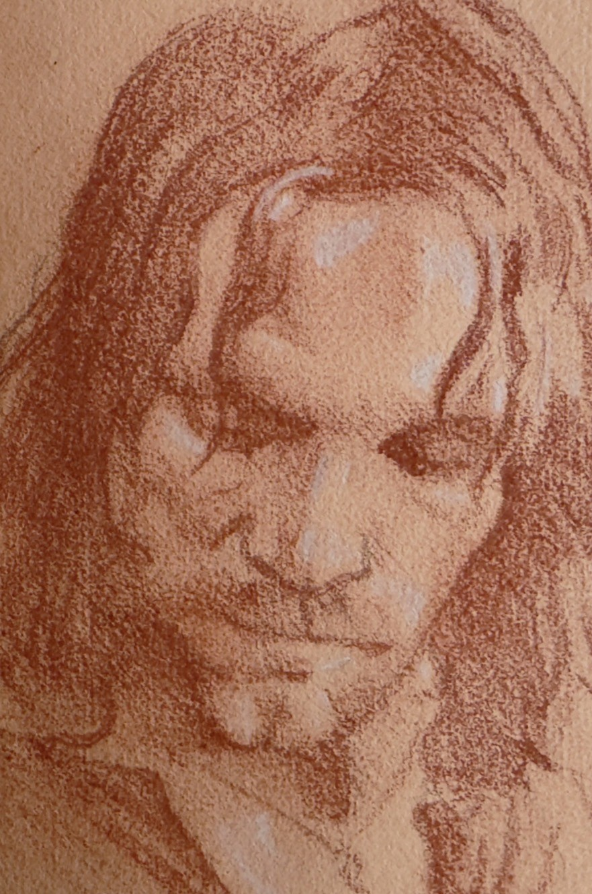
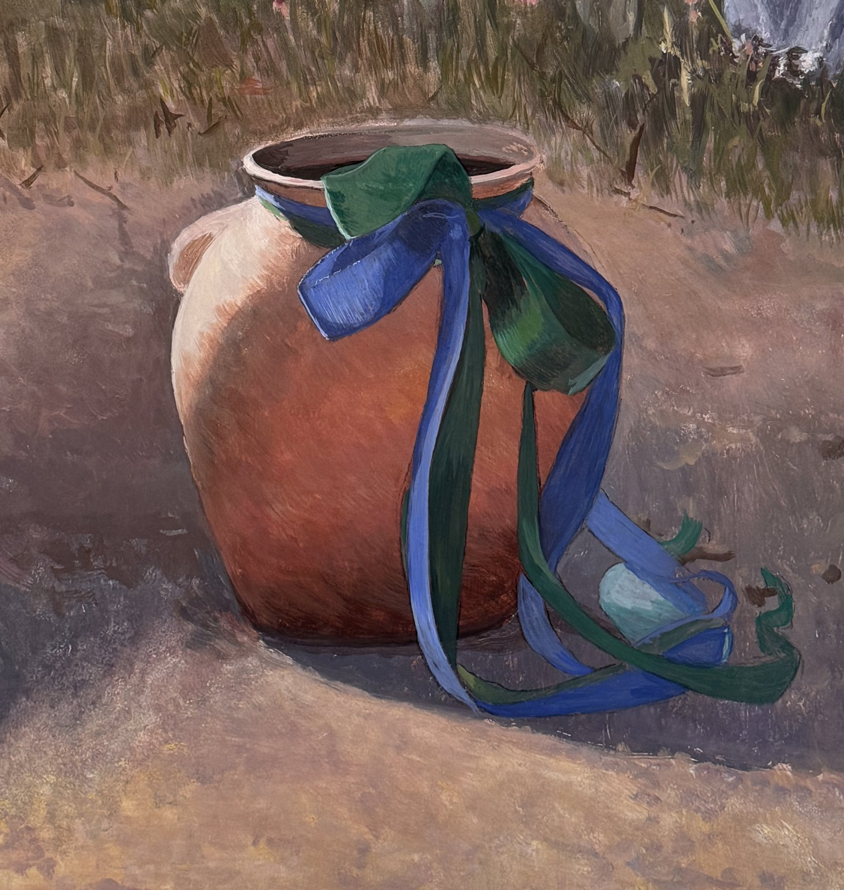

What you will study
Drawing
Students will learn the discipline of drawing, hand-eye coordination, and the observation of light and shadow while incorporating methods of the Old Masters: pencil, charcoal, silverpoint, red/black chalk and ink.
Painting
Mark Balma instructs students in the use of egg tempera and oil painting as practiced in 15th-century Europe by the Flemish Masters and Leonardo da Vinci. Accomplished students will also learn the art of buon fresco, working directly with Mark Balma on fresco murals.



The tools
- Pencil
- Charcoal
- Silverpoint
- Red and black chalk
- Ink
- Egg tempera
- Oil
- Buon fresco: lime plaster and pigment